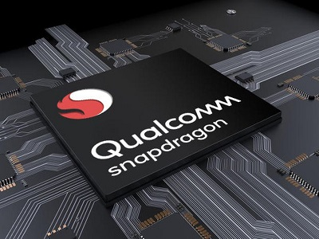
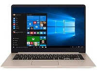
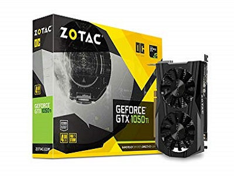

|  | CHIPSET SNAPDRAGON Review Chipset Snapdragon 675 Snapdragon 600 series ini memboyong sejumlah teknologi yang ada di premium-tier Snapdragon 800 series, menawarkan performa lebih cepat tapi tetap hemat baterai. Dampak yang akan begitu terasa ialah mampu menjalankan game lebih optimal, kemampuan fotografinya juga meningkat, dan apalagi? Baiklah, mari kita kupas bersama keunggulan dari “hati seekor naga” – Snapdragon 636...Read more |
|---|
|  | ASUS Asus VivoBook 14 A411UF Laptop ala Ultrabook dengan Harga Lebih Murah Asus kembali menghadirkan laptop terbaru seri VivoBook di Indonesia bernama Asus VivoBook 14 A411UF, laptop terbaru yang disebarkan ke pasaran. Model baru ini dihadirkan lebih ke segmen pengguna mainstream, namun tetap hadir dengan performa yang...Read more |
|---|
|  | VGA Card Zotac GTX 1050 Ti OC 4GB DDR5 Zotac yang merupakan salah satu produsen graphics card ternama, turut meramaikan kartu grafis berbasiskan GPU NVIDIA GTX 1050 dan 1050 Ti. Produsen ternama asal Taiwan menawarkan sepasang graphics card varian GTX 1050 dan 1050 Ti yang hadir dengan desain low profile...Read more |
|---|